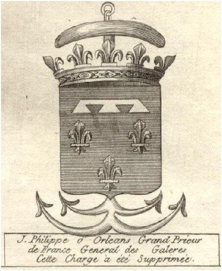

Прежде чем говорить о Генералах галер, следует вспомнить, что еще до воссоединения Прованса с Францией (1480) французы, начиная с времен короля Карла IV Красивого (1322—1328), держали свои галеры и галеасы в порту Марселя, несмотря на то, что этот город не находился тогда под управлением французской короны. В архивах также сохранились бумаги, подтверждающие, что в середине XV века в Марселе базировались четыре галеры, которые принадлежали Жаку Кёру (Iacques Cœur), казначею короля Карла VII. После того, как чиновник был обвинен в преступлении и осужден к изгнанию с конфискацией имущества, король наложил на галеры арест и выставил их на продажу. Галеры приобрел Бернар де Во де Монпелье, который дал им названия S. Michel, S. Iacques, S. Denis и la Magdelaine. Мы не можем сейчас назвать имена всех тех, кто командовал этой эскадрой и их титулы. Известен лишь Жан де Виллаж , уроженец Буржа, которому Людовик XI, бывший в то время еще дофином Вьеннским, в своей жалованной грамоте, или как говорили в то время французы, lettres patentes, от 8 января 1453 года присвоил титул Capitaine General sur la mer (Капитан-Генерал на море). Этот титул в последующем получали не только французы, но и иностранцы. Так венецианский дож Кристофо Моро числился Capitaine General du Roi de France. Дож пошел на такой шаг, желая дать галерам и кораблям Светлейшей, которые заходили в порт Эг-Морт, охранное свидетельство от посягательств местных властей.
Впервые титул Генерал галер появляется в дневниковой записи, Мишеля Гайяра (Michel Gaillar) от 10 декабря 1481 года. Член королевского совета Гайяр, назначенный исполнять роль командующего галерами в Марселе, был также Генералом финансов. Шарль де ля Ронсьер, который приводит упомянутую выше запись во втором томе своей «Истории французского флота», (Charles de la Roncière. Histoire de la Marine Française. t. II – (La guerre de Cent Ans. Révolution maritime), p.450) полагает, что титул Генерала в должности исполняющего обязанности командующего галерным соединением появился от названия главной должности Гайяра – Генерал финансов. Ранее, в 1478 году, в одной из расписок за получение денег их казны, Гайяр именует себя capitaine & grand patron des gallées de France.
С легкой руки Гайяра все последующие командующие галерным флотом Леванта носили титул Генерала галер. Исключение составил лишь Луи де Сернон (Louis de Serenon), который именовал свою должность (1487-1491) «capitaine général de la marine de Provence».
Титул Генерала галер вновь появился (и сохранялся уже до конца эпохи галер во Франции) с назначением на должность командующего флотом Леванта Прежана де Биду (Prégent de Bidoux).
Прежан де Биду, уроженец Гаскони, рыцарь ордена св. Иоанна Иерусалимского и глава аббатства св. Эгидия (St-Gilles-du-Gard), считается по традиции первым Генералом галер Франции на том основании, что эта должность не могла появиться до тех пор, пока Прованс не объединился с Францией, т.е. до 1480 г. По крайней мере, так считает Антуан де Руффи в своей «Истории Марселя». (Histoire de la ville de Marseille, 1696. Tome II, с.346). При Людовике XII Прежан со своими галерами в 1502 и 1503 годах принимал участие в войне против Неаполитанского королевства. Он командовал четырьмя галерами и восемью галионами при осаде Генуи в 1507 г., загнав генуэзские корабли этого города в порт. В 1513 г. вышел в океан, воевал с англичанами (об этом мы еще подробно расскажем). Пустил на дно восемь крупных кораблей Генриха VIII. Потерял глаз в этом сражении. После заключения мира с англичанами в сентябре 1514 г. вернулся в Марсель и некоторое время спустя вновь стал участвовать в боевых действиях против Генуи. После этого вышел в отставку и полностью посвятил себя участию в религиозных войнах своего ордена. Он находился при осаде Родоса, затем воевал в Марселе против герцога Бурбона. После этого были боевые действия в Испании. В 1528 г. он атаковал и захватил турецкий галиот, который направлялся в Ниццу. Однако в этом бою Прежан де Биду получил тяжелые ранения и умер в Ницце в августе этого же года в возрасте 60 лет.
Должность Генерала галер рассматривалась в Провансе как высший пост во всей военно-морской иерархии Леванта. Выше был только губернатор Прованса. Вот характерный эпизод, который приведен де ла Ронсьером в Истории французского флота. (т.II, с.451)
Маршал и Адмирал Франции, фаворит короля Франциска I Клод д'Аннебо, (Claude d'Annebault), войдя в Средиземное море во главе эскадры кораблей, направил Генералу галер приказ присоединиться к своему отряду. Должность Генерала галер в то время занимал барон де Лагард (baron de La Garde).
Его ответ Маршалу и Адмиралу был очень дерзок: «Я не могу пойти к Вам без приказа губернатора Прованса и адмирала Леванта графа де Танда, моего старшего начальника.» Адмирал рассвирепел, и приказал немедленно подчиниться своему приказу, «иначе вы на своей шкуре почувствуете силу моей адмиральской власти». Это не убедило командира галер: «Ваша власть не простирается дальше Гибралтара. По эту сторону пролива вы не имеете даже малейших полномочий. А поскольку вы мне угрожаете, то объявляю, что если ваши корабли появятся у Марселя, я их немедленно пущу ко дну.» Об инциденте было доложено Франциску. Однако монарх не стал принимать карательных мер, посчитав этот случай смешным. Хотя он имел возможность наказать де Лагарда за нарушение своего ордонанса, согласно которому «Адмирал Франции как глава всех военно-морских сил королевства должен встречать беспрекословное повиновение во всех морских акваториях.»